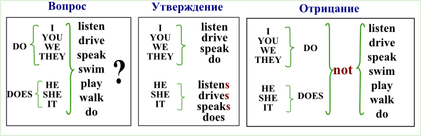
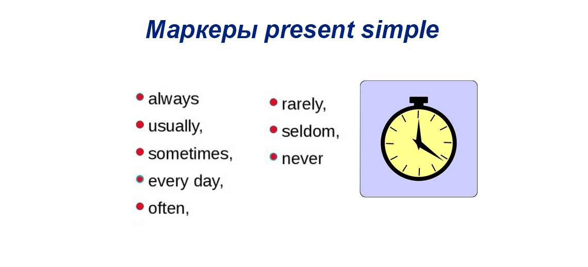

Основные времена, которые используются в разговорном английского языка
Разговорный АНГЛИЙСКИЙ отличается от письменного английского. Разговорный имеет более простые формы выражения.Поэтому и времен используется меньше. Сейчас мы разберем основные времена в АНГЛИЙСКОМ ЯЗЫКЕ такие как: PRESENT SIMPLE, FUTURE SIMPLE, PAST SIMPLE
PRESENT SIMPLE
- Present Simple - это настоящее простое время. Люди используя это время, рассказывают о своих привычках, о научных фактах. Проще говоря это время показывает настоящие, регулярные и повторяющиеся действия. Как и все времена в английском языке, Present Sipmle имеет маркеровочные слова
- i/she always cook/s buscuits for the holidays. ( я всегда готовлю печеньки на праздники)
- she doesn't like weather in London. (она не любит погоду в Лондоне)
- do you like pizza? (ты любишь пиццу?)

